数学与计算机应用学院简介
一、历史前沿
数学与计算机应用学院的前身为成立于1976年的陕西省商洛地区五七师范学院数学科和1999年的商洛师范专科学校计算机系，2014年由商洛学院数学与计算科学系和计算机科学系合并组建为商洛学院数学与计算机应用学院。 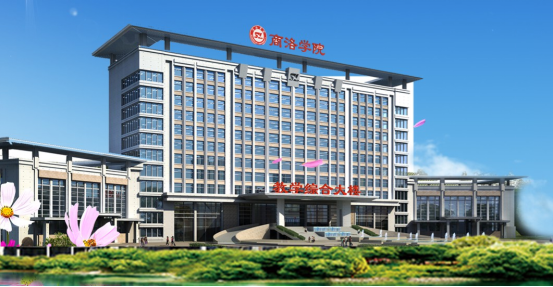二、机构设施
学院下设三个系、三个实验中心、两个教学部、一个研究所和一个工程研究中心共10个教学和教辅部门，包括应用数学系、计算机系、网络工程系、计算机应用实验中心、网络工程实验中心、数学建模实训中心、计算机文化教研部、高等数学教研部、应用数学研究所、秦岭康养大数据陕西省高校工程研究中心。建有公共计算机类、计算机软件类、计算机硬件类、网络工程类四大类实验室，12个实验分室，可以满足课程实验教学和科学研究需要，建有校内外实习实训基地40余个，能满足实习实训等实践教学的要求。 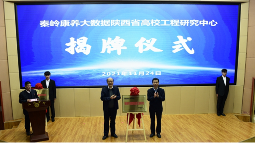我院“秦岭康养大数据陕西省高校工程研究中心”举行揭牌仪式
三、学科建设
学院现有数学与应用数学、计算机科学与技术、网络工程、数据科学与大数据技术等4个本科专业，现有全日制在校本科学生1800余人。其中数学与应用数学专业为校级特色专业，肇始于1976年10月的数学专业，2000年、2002年分别与宝鸡文理学院、陕西理工大学联办本科班，2006年起独立招收本科生。2013年获批校级特色专业，2018年数学学科被评为校级重点（培育）学科，2022年通过教育部第二学士学位备案。2023年通过教育部师范类专业第二级认证。 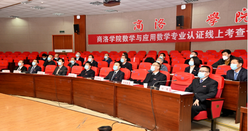数学与应用数学专业接受教育部师范类专业第二级认证线上考查
计算机科学与技术专业2014年获批陕西省本科高校“专业综合改革试点”项目，2020年入选陕西省“一流专业”建设点，2021年通过教育部第二学士学位备案。四、师资队伍
目前，学院现有教职工94人，专任教师72人，其中教授10人（含三级教授1人），辅导员11人，校级以上教学名师11人，博士18人（含在读博士10人），1人出国留学并在知名大学做访问学者。聘任陕西师范大学二级教授、博士生导师李永明为我院客座教授。 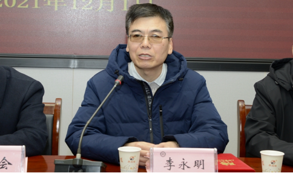客座教授 李永明
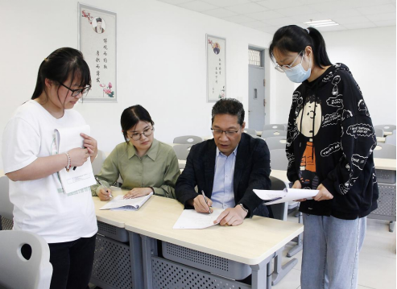三级教授 李 超
五、教育教学
近年来，学院荣获陕西省教育教学成果一等奖2项，二等奖2项，校级教育教学成果奖特等奖1项，一等奖4项；省级“课程思政”教学团队2个，省级“课程思政”示范课程2门，省级一流课程4门；获陕西本科高校课堂教学创新大赛三等奖1项，陕西高校青年教师教学技能竞赛三等奖1项，陕西省首届数学专业教师教学竞赛三等奖2项，校级课堂教学创新大赛一等奖1项，校级课程思政比赛“课程思政教学标兵”1人，“课程思政教学能手”1人；获“互联网+”大学生创新创业训练大赛国家级铜奖1项，省级金奖1项、铜奖2项。 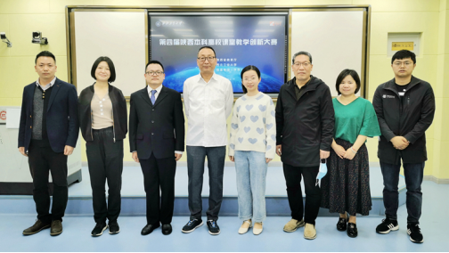我院教师在陕西第四届本科高校课堂教学创新大赛中获省赛三等奖
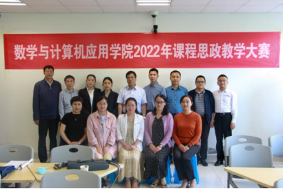我院举办2022年课程思政教学大赛
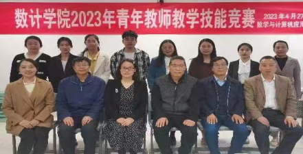我院举办2023年青年教师教学技能竞赛
六、科学研究
近年来，学院获批校级优秀科研创新团队2个；教师主编教材14部，参编教材20余部；教师主持陕西省自然科学基金项目9项，省级教学改革项目30余项，横向项目100余项；教师在国内外期刊上发表学术论文300余篇，其中SCI收录40余篇，核心期刊180余篇；荣获陕西省高等学校科学技术奖一等奖1项、三等奖3项；荣获商洛市科学技术奖一等奖1项、二等奖3项、三等奖7项；荣获商洛市自然科学优秀学术论文奖一等奖10项、二等奖15项、三等奖12项；荣获商洛学院优秀科学研究成果特等奖3项、一等奖5项。 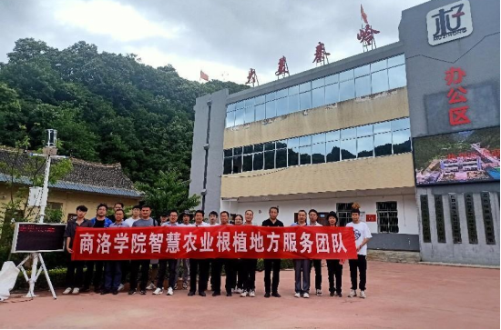我院科研团队服务地方
七、开放办学
多年来，学院高度重视校企合作，逐渐形成两双定位（校企育人双主体、教师工程师双课堂）、三化教学（教学内容项目化、教学团队双师化、实习就业一体化）特色。学院本着“优势互补、资源共享、互惠双赢、共同发展”的原则，充分发挥高校人才培养、科学研究和服务社会的功能，实现人才培养目标，提高人才培养质量，促进双方共赢发展。2016年获学校“学风建设先进集体”；2017年获学校“考研先进集体”“就业工作先进集体”“省级大学生暑期社会实践优秀团队”；2018年获学校“学风建设先进集体”“优秀团总支”“就业工作先进集体”“公寓工作先进集体”；2019年获“‘万名学子扶千村’大学生脱贫攻坚社会实践专项活动先进集体”；2020年获学校“学生工作先进集体”“就业创业工作先进集体”“治安综合治理先进集体”“目标责任考核优秀单位”，2021年获学校“先进集体”“治安综合治理先进集体”“目标责任考核优秀单位”；2022年被评为易班工作分站“优秀组织单位”、课堂教学大赛“优秀组织奖”“优秀团总支”“先进基层党组织”“先进党支部”，“目标责任考核优秀单位”；2023年获评“校园治安综合治理先进集体”“先进基层工会”“暑期三下乡社会实践活动优秀组织单位”等荣誉。 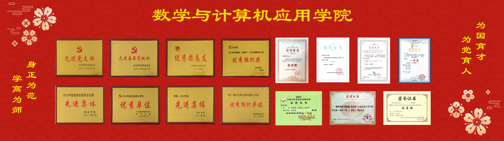我院近年取得荣誉（部分）
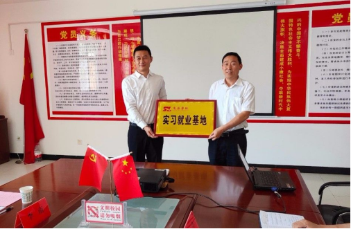校党委副书记刘勇为我院实习就业基地授牌
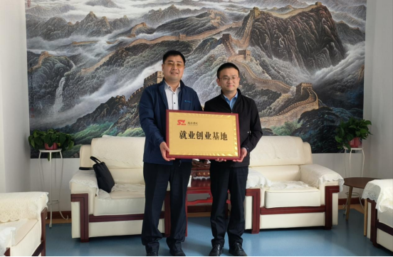院党委书记廉明为我院就业创业基地授牌
八、科学竞赛
学院以学科竞赛为抓手，以校园文化活动为依托，不断加强学风建设，学生综合素质不断提高。2015年至今，学生参加各级各类比赛共获得省级及以上奖励180余项，其中国家级50余项，一等奖5项，二等奖14项；学生以第一作者在省级期刊发表论文30余篇；学生获得国家级大学生创新创业训练计划项目18项；获得2021年全国第七届“互联网+”大赛国赛铜奖1项，陕西省赛区金奖1项、银奖1项，2022年第八届互联网+大赛省级复赛银奖2项；获第四届全国师范生微课大赛一等奖1项、二等奖1项；获陕西省首届高校师范生教育教学能力大赛优秀奖1项；每年全国大学生计算机设计大赛、“蓝桥杯”全国软件和信息技术专业人才大赛获奖比例高，并有2-3名学生去北京参加决赛，直接推荐到华为、中兴等公司工作。这些比赛充分展现了学生具有较强的专业水平和实践操作能力、默契配合的团队精神和创新精神，展示了我院应用型人才培养的成果。 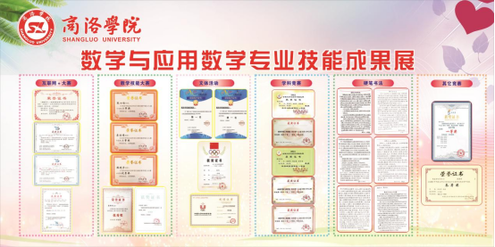我院学生获得的成果（部分）
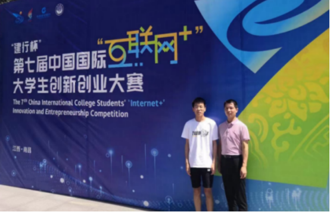我院学生团队获得第七届中国国际“互联网+”大赛国赛铜奖、省赛金奖
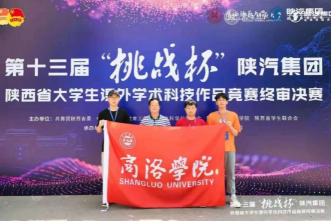我院学生在第十三届“挑战杯”陕西省大学生课外学术科技作品竞赛中获省赛二等奖
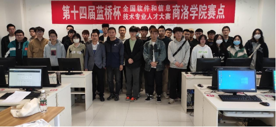第十四届蓝桥杯全国软件和信息技术专业人才大赛
九、考研就业
学院学生考研率连年递增，近三年有100余名学生考取了陕西师范大学、长安大学、上海海事大学等知名大学硕士研究生。学院毕业生一次性就业率保持在93%以上，约有40％的学生在省、市级单位就职，毕业生中涌现出了入选2022年度全球前2%顶尖科学家榜单宋永利教授（入选“终身科学影响力排行榜”）；第44届世界技能大赛产品设计类项目中铜牌获得者高雨楠（受到李克强总理亲切接见）；2016年陕西省教育系统“我身边的好典型”获得者李楠；“中国大学生自强之星”和“商洛好人”，以及2022年第二季度“陕西好人”入围者冯倩等为代表的一大批优秀校友。 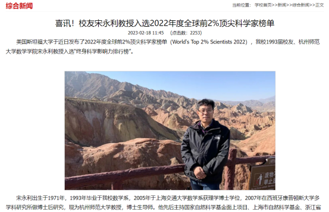校友宋永利教授入选2022年度全球前2%顶尖科学家榜单
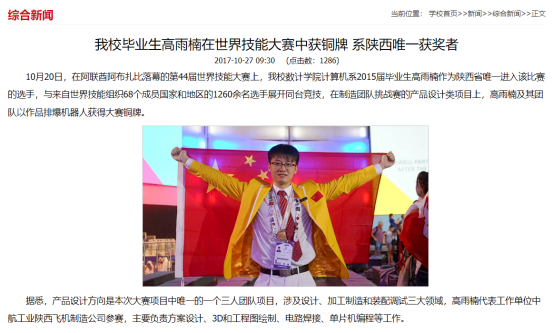高雨楠在第44届世界技能大赛产品设计类项目中获得铜牌
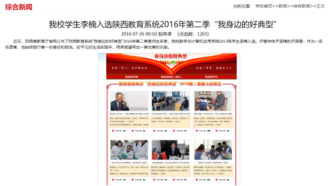李楠在入选陕西省教育系统2016年第二季“我身边的好典型”
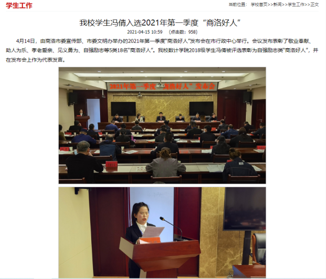优秀学子冯倩在2021年第一季度“商洛好人”发布会上发言
十、招生专业介绍
数学与应用数学专业培养目标
本专业立足商洛，适应陕西基础教育改革发展要求，培养德智体美劳全面发展，掌握数学科学及数学教育的基本知识和理论，具备运用数学知识、现代教育理论与技能解决实际问题的能力，具有数学教育教学创新意识和教师职业素养，能在中学、教育机构等部门从事教学、教研等方面工作的骨干教师。
学制与学位
基本学制：4年，授予理学学士学位。
课程设置
数学分析、高等代数、解析几何、概率论与数理统计、常微分方程、复变函数、实变函数、数学建模、近世代数、教育学、心理学、数学教育学、初等数学研究等。
计算机科学与技术专业
培养目标
本专业培养德智体美劳全面发展，掌握计算机领域的基本知识与理论，技术过硬，道德高尚，具备较强的创新精神和自主动手能力，具有较强的计算机应用素质，能在计算机相关行业从事计算机应用、软/硬件开发、网络设计与管理等工作的应用型人才。
学制与学位
基本学制：4年，授予工学学士学位。
课程设置
计算机导论、离散数学、模拟与数字电子技术、C语言程序设计、线性代数、汇编语言程序设计、算法与数据结构、概率论与数理统计、操作系统、计算机网络、面向对象程序设计、计算机组成原理、数据库开发与应用、网页与网站设计、微机原理与接口技术、软件工程等。
网络工程专业
培养目标
本专业培养德智体美劳全面发展，具有创新精神，知识素养和能力素养协调发展，掌握计算机基础知识和网络工程专业知识和专业思维，具备网络系统规划与设计、部署与实施、分析与测试、运维及管理以及应用系统设计与开发等方面的工程实践能力，具备团队协作、终身学习、国际交流的能力，能在企事业单位和其他各行各业的网络信息技术部门从事网络规划与设计、网络应用系统集成与网络应用开发、网络运维与管理及网络安全防范的应用型人才。
学制与学位
基本学制：4年，授予工学学士学位。
课程设置
网络工程专业导论、C语言程序设计、离散数学、算法与数据结构、模拟与数字电子技术、线性代数、汇编程序设计与微机接口、概率论与数理统计、信息安全基础、数据库原理与应用、计算机网络、计算机组成原理、面向对象与Java程序设计、操作系统、路由与交换技术、网络规划与设计、Web程序设计等。
数据科学与大数据技术专业
培养目标
本专业培养德智体美劳全面发展，掌握信息与计算科学、数据科学所需要的数学、计算机科学等相关学科的基础理论与基本方法，具备大数据分析与应用的基础知识和大数据工程项目的设计和开发能力，可在科研院所、政府机关、互联网企业、信息技术等企事业单位从事数学建模、大数据统计分析、大数据应用开发、云计算等工作，也可以选择到国内外相近学科的教学或研究单位继续深造，具有良好的数学思维能力、大数据视野、人文素养和创新精神的高素质应用型人才。
学制与学位
基本学制：4年，授予工学学士学位。
课程设置
C语言程序设计、Python程序设计、Java面向对象的程序设计、数据库原理与应用、离散数学、云计算与大数据技术、数据结构与算法分析、开源大数据平台技术基础、大数据分析实践、数据分析理论与实践、数据仓库原理与实践、数据挖掘等。
在新的历史起点上，学院将秉承“自强不息 止于至善”的大学精神，“尚教为学 践用至要”的办学理念，聚焦“立德树人”根本任务，以学科建设为依托，以队伍建设为保障，不断加强自身发展，为探索具有鲜明特色和示范效应的应用型人才培养模式而凝心聚力，继续奋斗！
（2024年3月21日更新）
商洛学院数学与计算机应用学院欢迎您！